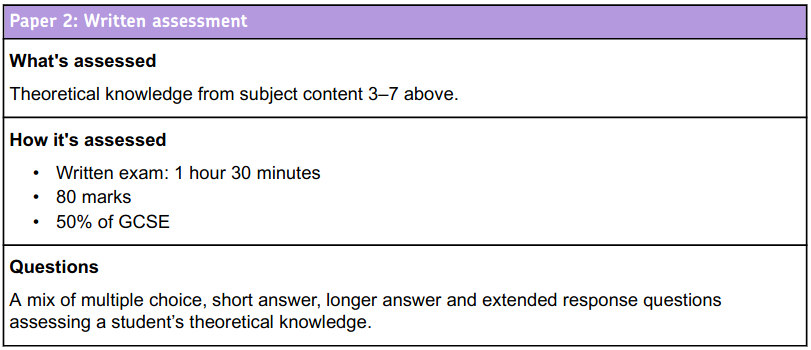
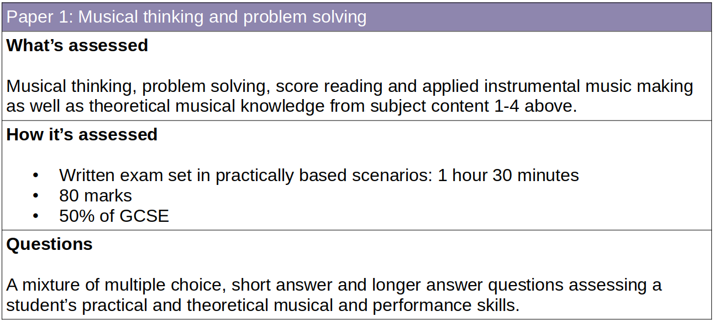

Creating a Coding Culture
Nicholas H.Tollervey
ntoll@ntoll.org
Part 1.
The Narrative
2040-ish?
Change is the only constant.
~ Heraclitus
It is difficult to predict (especially the future).
~ Niels Bohr
The real question is, do we direct technology, or do we let ourselves be directed by it and those who have mastered it?
Asking what sort of education we want is the same as asking what sort of society we want to become.
For education is the process through which we interact with our future colleagues, collaborators and customers.
~ Nicholas Tollervey ;-)
Part 2.
Learn Code
School exams 🇬🇧 😬
Join our coding bootcamp in London
(£6000 for 3 months)
Part 3.
Progress is a Journey
Thought experiment
What if we taught music like we teach programming?
School exams 🎺 😬
🤔
Part 4.
Culture And Code
Thought experiment
What if we taught programming like we teach music?

What we have to learn to do, we learn by doing; thus we become builders by building houses, and musicians by playing music.
~ Aristotle (Nicomachean Ethics)
🤣 Homework 🤣
Due at GITEX 2040
The End
Image/Video Credits (educational fair use):
- Fiddle kid: Greenwich Music School
- Nicola Benedetti: The Times
- Pub fiddle: screen grab from this video
- Kala Ramnath: The Hindu
- Heavy metal cello: Apocalyptica
- Octubafest: NMPAT
- Recorder: Sarah Jeffery / Team Recorder
- Augmented 5th: Jesse Strickland
- Moon: Heinz-Eberhard Boden
- Music for Youth: Official website
{kind=link}
{kind=link}
{kind=link}
{kind=link}
{kind=link}
.jpg){kind=link}
_(cropped).jpg){kind=link}
.jpg){kind=link}
.jpg){kind=link}